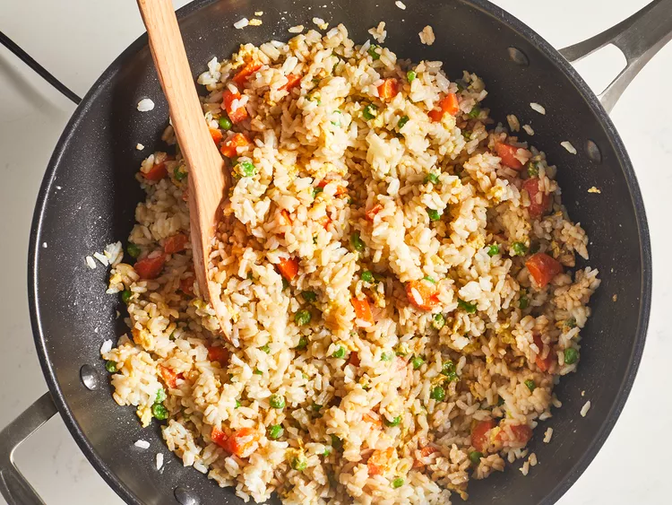

Description
This fried rice recipe only takes 15 minutes to cook and tastes just like you get at your favorite Chinese restaurant. Leftover rice, plus a couple of eggs, baby carrots, peas, and soy sauce is all you need. Garnish with sliced green onions, if desired.
Ingredients
- 2/3 cup chopped baby carrots
- 1/2 cup frozen green peas
- 2 tablespoons vegetable oil
- 1 clove garlic, minced, or to taste (Optional)
- 2 large eggs
- 3 cups leftover cooked and chilled white rice
- 1 tablespoon soy sauce, or more to taste
- 2 teaspoons sesame oil, or more to taste
Directions
Step 1
Assemble ingredients.
Step 2
Place carrots in a small saucepan and cover with water. Bring to a low boil and cook for 3 to 5 minutes. Stir in peas, then immediately drain in a colander.

Step 3
Heat a wok over high heat. Pour in vegetable oil, then stir in carrots, peas, and garlic; cook for about 30 seconds. Add eggs; stir quickly to scramble eggs with vegetables.

Step 4
Stir in cooked rice. Add soy sauce and toss rice to coat. Drizzle with sesame oil and toss again.
Step 5
Serve hot and enjoy!